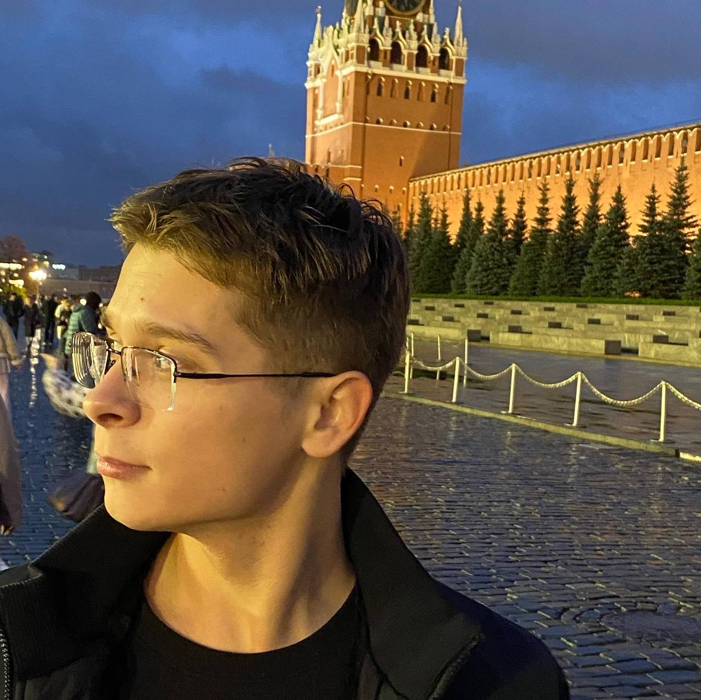

Ахатов Александр, чуть менее оболтус
Обо мне
Меня зовут Саша, мне почти 21 год, люблю видеоигры и маму, родился и живу в городе Рыбинск 〈тут мало рыбы〉.
Образование
Закончил я полных 11 классов и очень даже хорошо, по результатом ЕГЭ поступил в ЯрГУ им. П.Г.Демидова и благополучно забрал от туда документы после первого курса, сейчас учусь с малым успехом в нашем Рыбинском РГАТУ.
Опыт работы
Работал я весь прошлый год в сфере общепита, в основном официантом, иногда барменом и даже уборщиком.
Хобби
С раннего детства я увлекаюсь компьютерными играми и большую часть своего досуга провожу именно в них, так же я очень люблю музыку, даже хотел связать свою жизнь с ней, но кто знает, в какое колено попадет стрела.
Как я стал разработчиком
- 2 февраля я присоединился к курсу "Frontend-разрабочик"
- 3 февраля я приступил к изучению HTML
- 7 февраля я написал свой первый сайт-визитку
- 8 февраля я приступил к изучению CSS
- 13 февраля у меня была алкогольная кома в связи с моим Днем Рождения
- 20 февраля у меня сломался компьютер из-за чего я сильно отстал, но я не унываю!!
- 2 марта я закончил Модуль 3. Advanced CSS (Часть 2)
- 4 марта я улучшил свой сайт-визитку